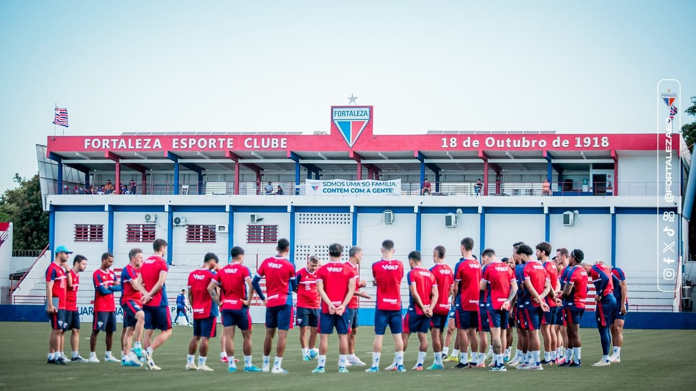
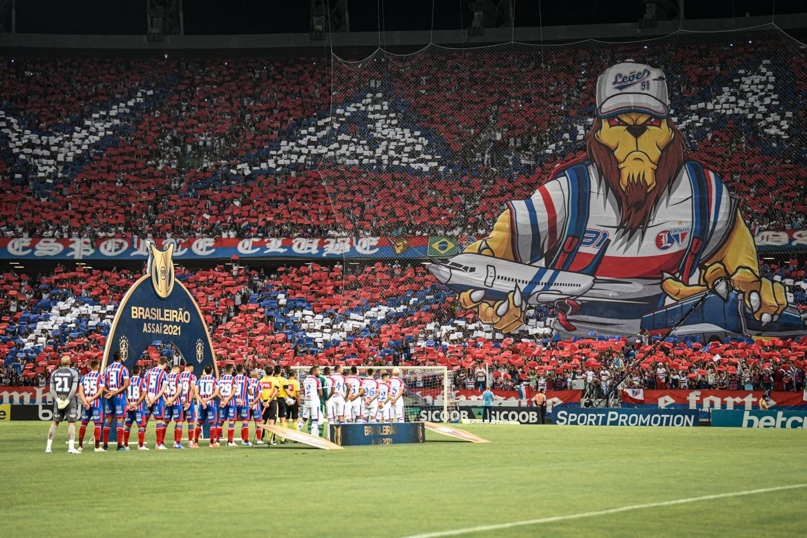
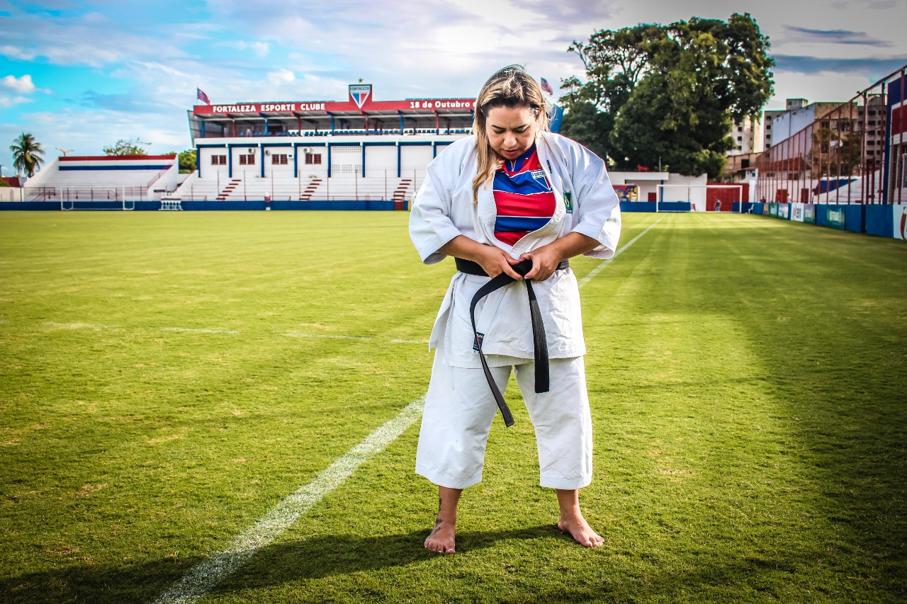
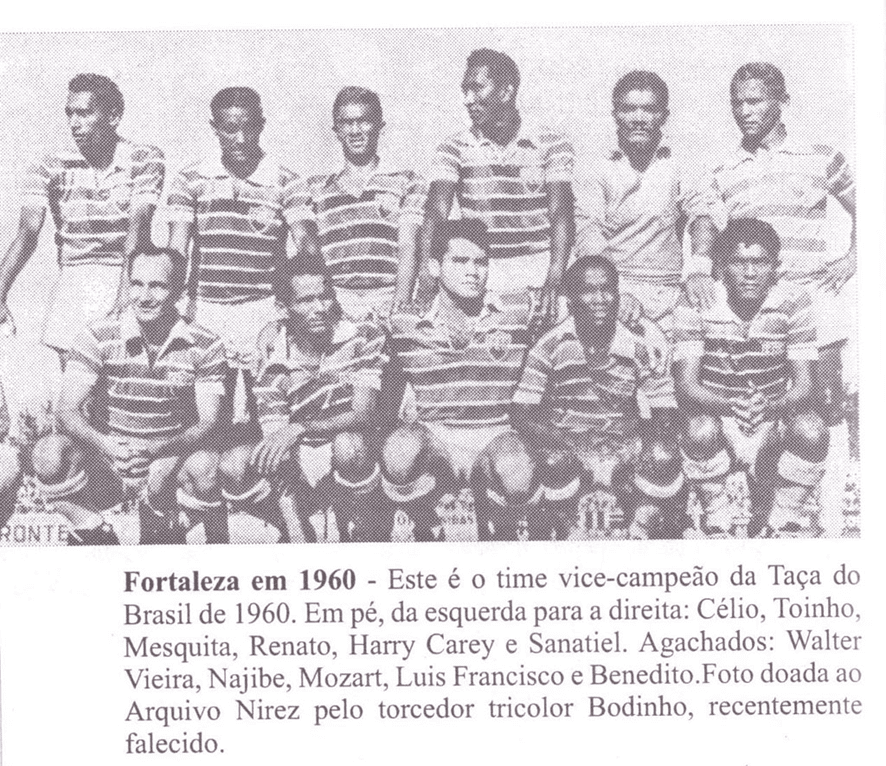

Fortaleza Esporte Clube
Artigo
O Fortaleza Esporte Clube é um clube poliesportivo da cidade brasileira de Fortaleza, capital do estado do Ceará. Fundado em 18 de outubro de 1918 por Alcides Santos, sua principal modalidade é o futebol masculino, em que obtém melhor desempenho no Campeonato Cearense, vencido 46 vezes, estando empatado com o maior rival estadual Ceará. Nos âmbitos inter-regional e regional detém o Torneio Norte-Nordeste de 1970 e a Copa do Nordeste de 2019,
2022 e 2024. Seu maior título é a Série B do Campeonato Brasileiro de 2018, tendo também sido vice-campeão das
séries A e B nacionais em duas ocasiões cada. Nas campanhas continentais foi o primeiro clube cearense a participar da Copa Libertadores da América, em 2022, e o único do Nordeste a ser finalista da Copa Sul-Americana, em 2023.

foto do campo de treinamentos
Dono da maior torcida do estado do Ceará, 2ª maior do Nordeste e 13ª maior do Brasil, o clube leva os maiores públicos para os estádios cearenses desde os anos 70, comprovando o crescimento de sua torcida após as grandes campanhas de vice-campeão brasileiro em 1960 e 1968, da conquista do Norte–Nordeste em 1970 e de consideráveis títulos estaduais. Na Série A do Campeonato Brasileiro de 2005, teve a segunda maior média de público dentre todos os 22 clubes. Em 2014, foi o clube detentor do maior público do país numa só partida. O grande público acabou sendo notícia em sites do mundo inteiro, como o Japão, dando grande ênfase a sua torcida e a festa que é realizada durante os jogos. O Fortaleza também tem a maior renda da história da Arena Castelão. Teve ainda o maior público do Castelão após reforma e também o maior público e renda do Presidente Vargas após a última reforma. Em 2019 o Fortaleza obteve a maior média de público da Série A do Campeonato Brasileiro na era dos pontos corridos dentre os clubes nordestinos e a segunda maior média de público dentre todos os 20 clubes nessa edição com média de 33 mil pagantes por partida. A torcida do "Leão" também é famosa pelos belos mosaicos que monta em partidas importantes, considerado os melhores mosaicos de torcidas do Brasil e um dos melhores do Mundo. O clube tricolor também tem números expressivos de torcedores nos estados do Acre, Amazonas, no Distrito Federal, no Pará, no Piauí, no Rio Grande do Norte e em Roraima, onde o clube possui embaixadas desde 2005 e a maior torcida organizada de Boa Vista, torcida que o tornou o clube cearense com mais apostas de Time do Coração na loteria Timemania, da Caixa Econômica Federal, em todos os anos no período de 2009 até 2018, sendo atualmente o segundo do Nordeste, atrás apenas do Bahia, e o décimo quarto do Brasil.

foto da torcida do Fortaleza
O Fortaleza tem também tradição em outros esportes olímpicos, ostentando os títulos de campeão brasileiro adulto de handebol feminino em 2001, e em 2004, no masculino; campeão nordestino de basquetebol em 2001 e em 2003; campeão do Norte/Nordeste de Futsal em 2003 e da Liga Nordeste de Futsal de 2009; e bicampeão da Liga Nordeste de Handebol masculino (em 2010 e 2011) e feminino (em 2001 e 2015).

foto da judoca de outros esportes
História
Segundo registros oficiais, o Fortaleza Sporting Club foi fundado em 18 de outubro de 1918 por iniciativa de um grupo de pessoas socialmente abastadas, entre elas o empresário Alcides Santos. Apesar de a instituição considerar-se uma continuação do Stella Foot-Ball Club, cujo nome era uma homenagem a um colégio suíço onde estudaram alguns dos homens criadores do time, historiadores alegam que o Fortaleza existia antes de 1918, tendo modificado sua denominação para Stella e retornado à original. A precariedade de dados sobre este período e a falta de conquistas expressivas anteriores levaram os dirigentes a oficializarem os aniversários do clube em 18 de outubro. O nome da agremiação, inspirado na própria capital do estado do Ceará, é associado ao período de rebuscamento do nacionalismo e do regionalismo consequentes do declínio da belle époque, quando os bairros centrais de Fortaleza receberam influências francesas, causado pelo envolvimento de países europeus na Primeira Guerra Mundial.
Em 1920, interessados no ingresso do futebol cearense na Confederação Brasileira de Desportos (CDB), os dirigentes do Fortaleza, Ceará, Guarany e Bangu fundaram a Associação Desportiva Cearense (ADC), que passou a promover o Campeonato Cearense de Futebol. A primeira década da competição teve domínio do Fortaleza, que venceu a primeira edição numa vitória por 2–0 sobre o Guarany e conquistou mais seis até 1928, com um tricampeonato a partir de 1926. O marco da rivalidade entre Fortaleza e Ceará data de 1922, quando o alvinegro, campeão estadual, foi goleado pelos tricolores por 6–3.

time de 1960 do fortaleza